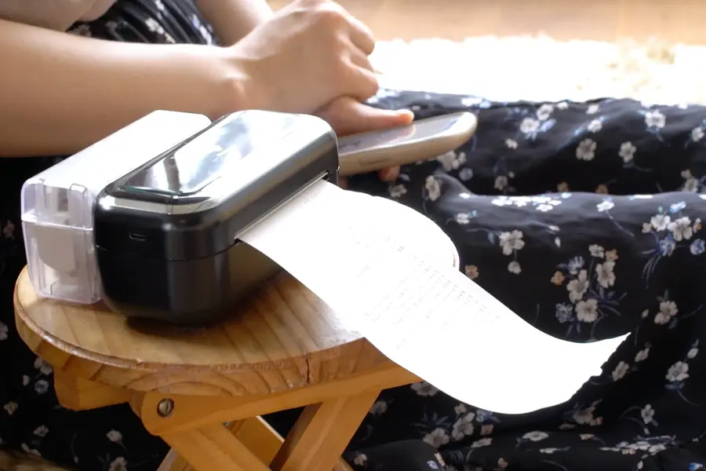
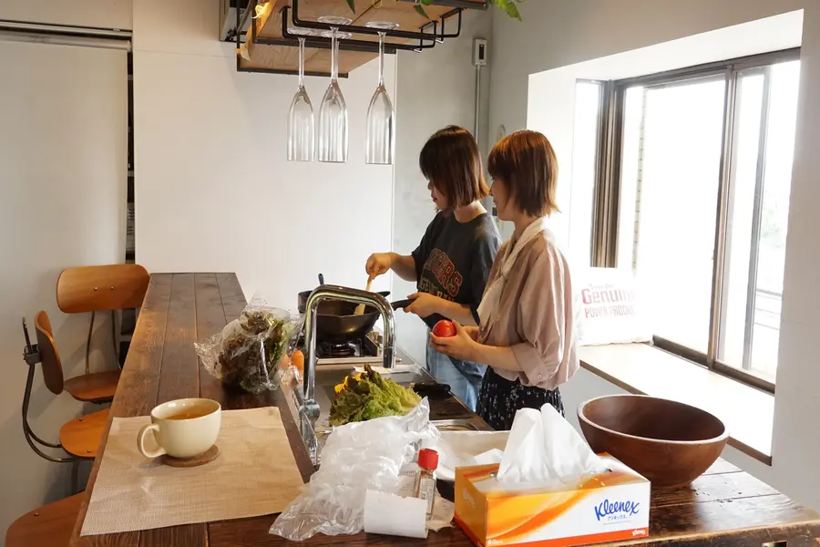
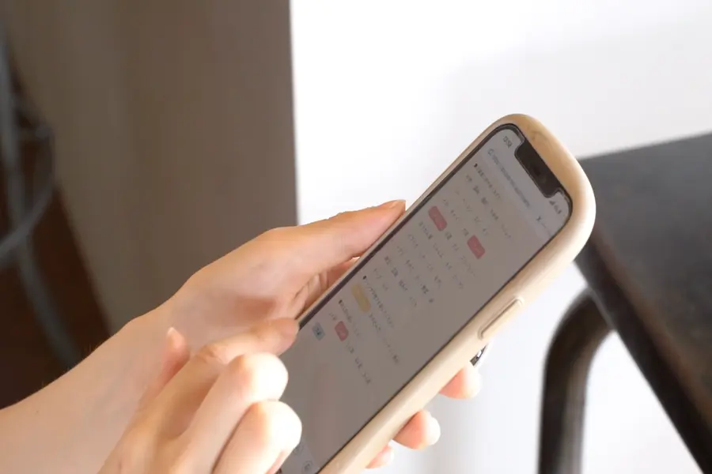

撮影の時の様子
アプリの使い方
スマホのBluetoothをONにして機器とスマホをつなげる
スマホのphomemoというアプリから使いたい具材を選択
人数や難易度を選んだらシートだ印刷されるのをまつだけ！手軽にレシピ提案

レンタルキッチンを借りて
桜木町にあるレンタルキッチンをかりて、動画撮影の下ごしらえをしに行きました。
かわせみは料理ができないので、みゆちゃんに手伝ってもらいながらつくりました（笑）

アプリの説明
スマホで選んだ条件から、紙でレシピを出力してくれます
条件の設定を変えれば、1人用にも大人数用にもできます
完成動画はこちら
動画編集はAdobeのpremiereを使いました!
普段スマホでの編集に慣れているのでなかなか難しかったです（笑）
料理の献立に悩んだ時のお悩み解決に!COOKUTTEを使ってみてください。